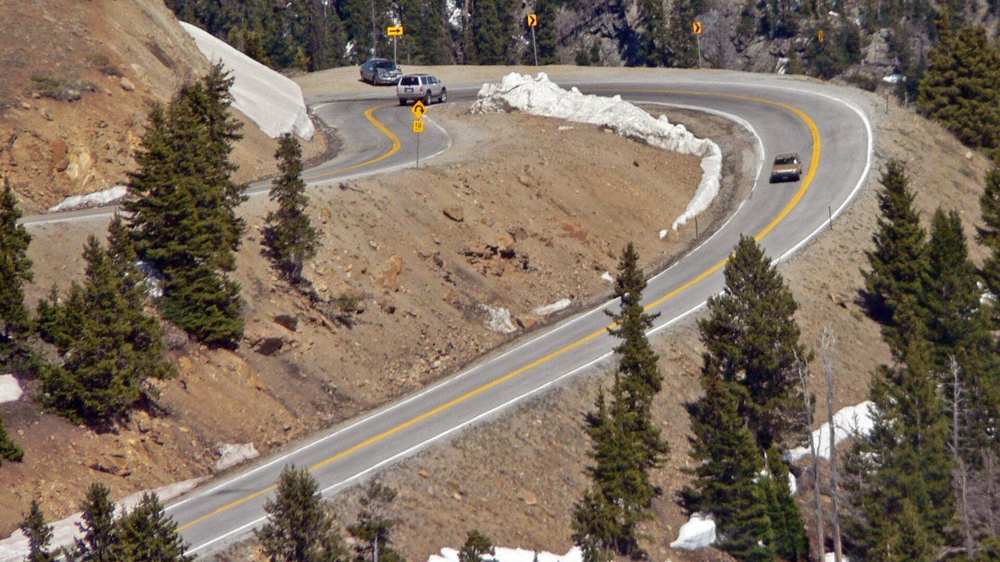

Race, Independence Pass

Behind
Best +0:01
371W
Target 418 W-47 W
- Cadence
- 87rpm
- Heart
- 140bpm
- Speed
- 26.5km/h
Work13 of 21
1:13
Next: · 1:30 at level 19
+7.7%
500 m climbed
8.73 km
22
Resistance / 32
Solo races your best-time ghost: position reads Ahead or Behind, and solo alone gets a Pause button. Frozen at 20:17.